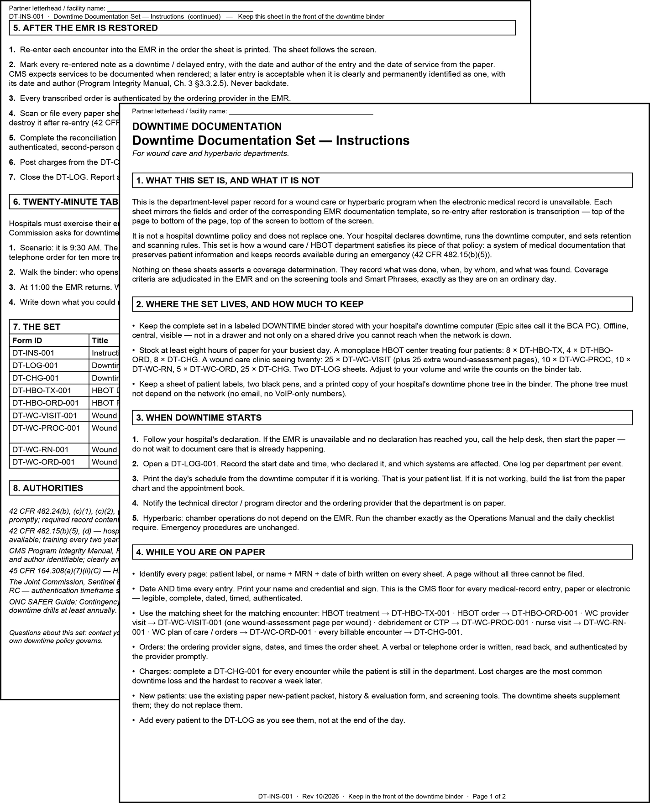
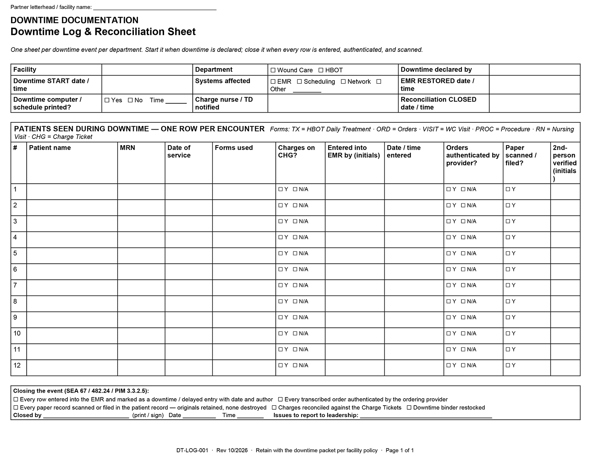
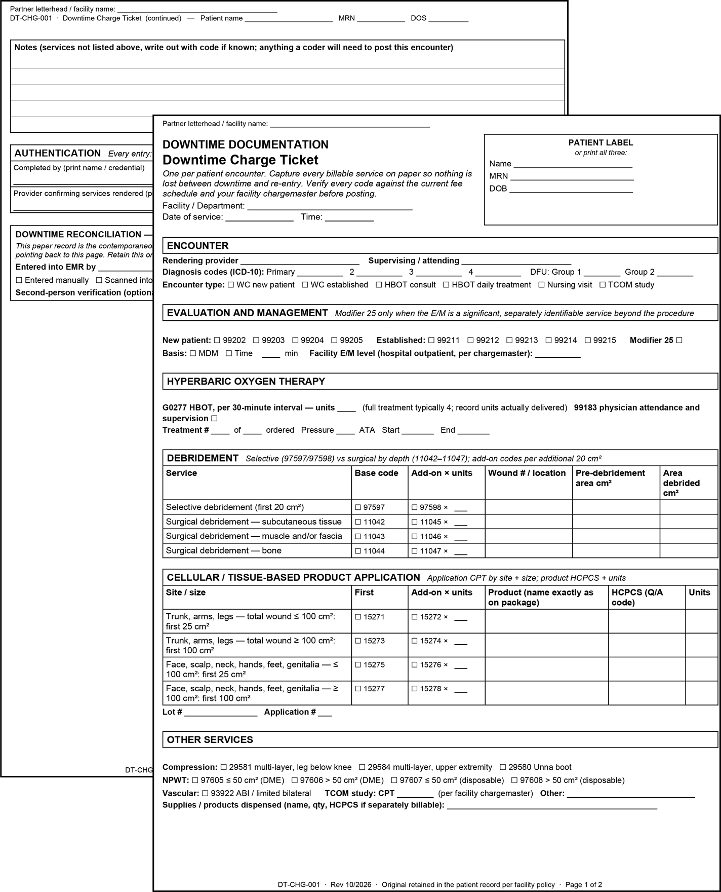
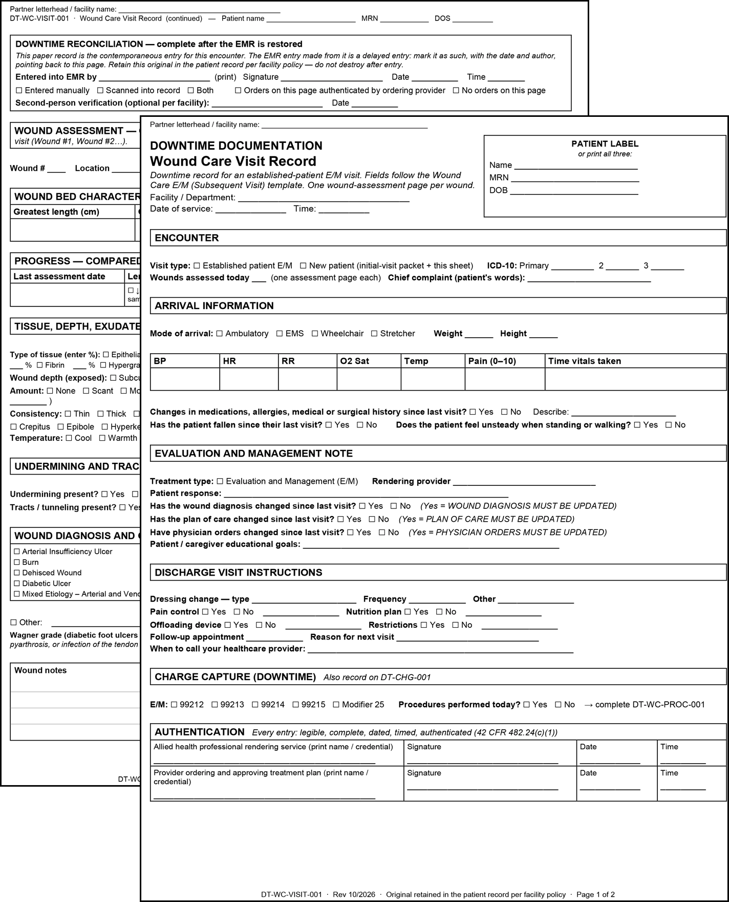
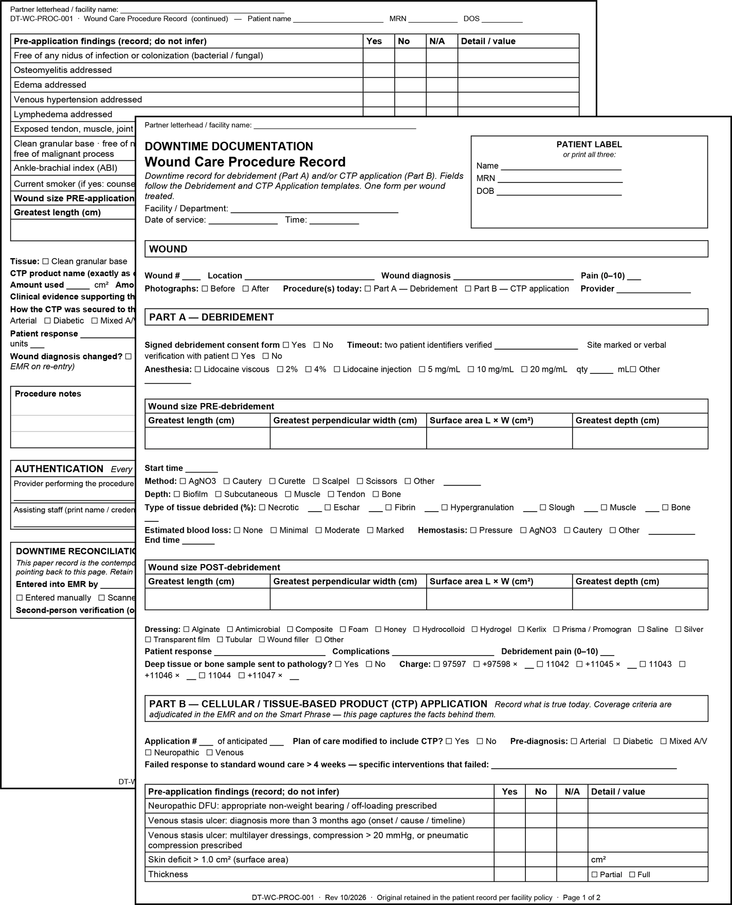
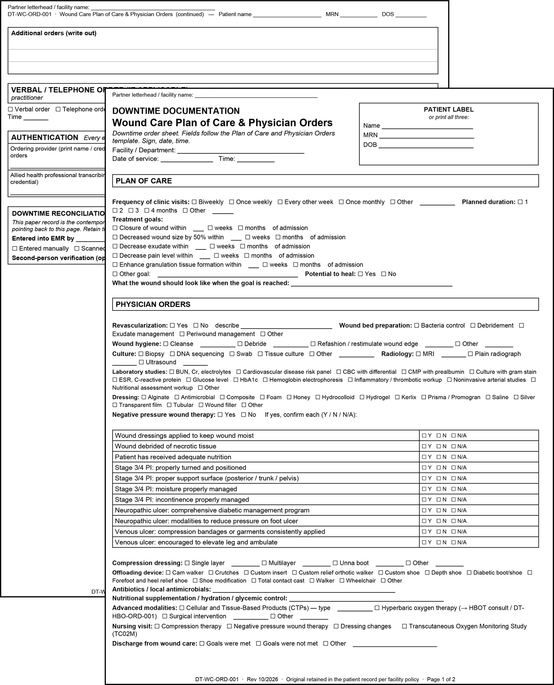
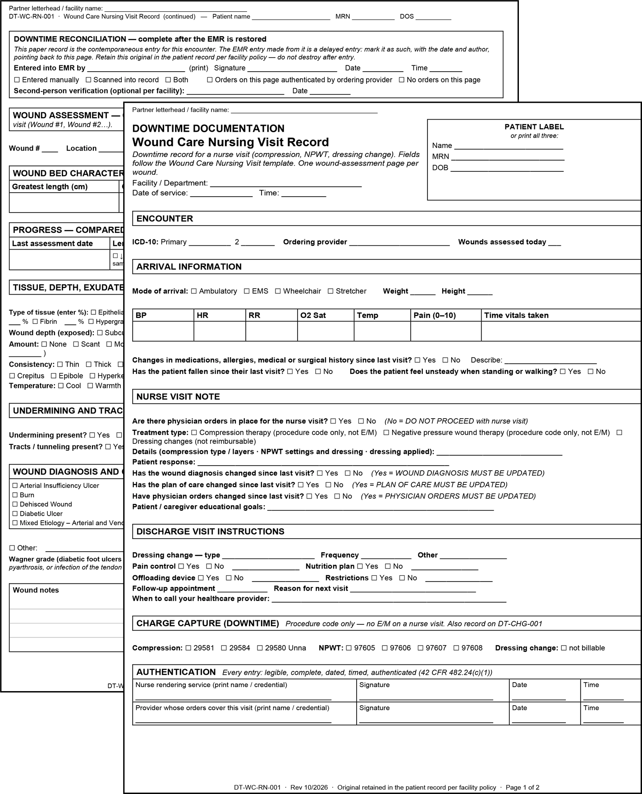
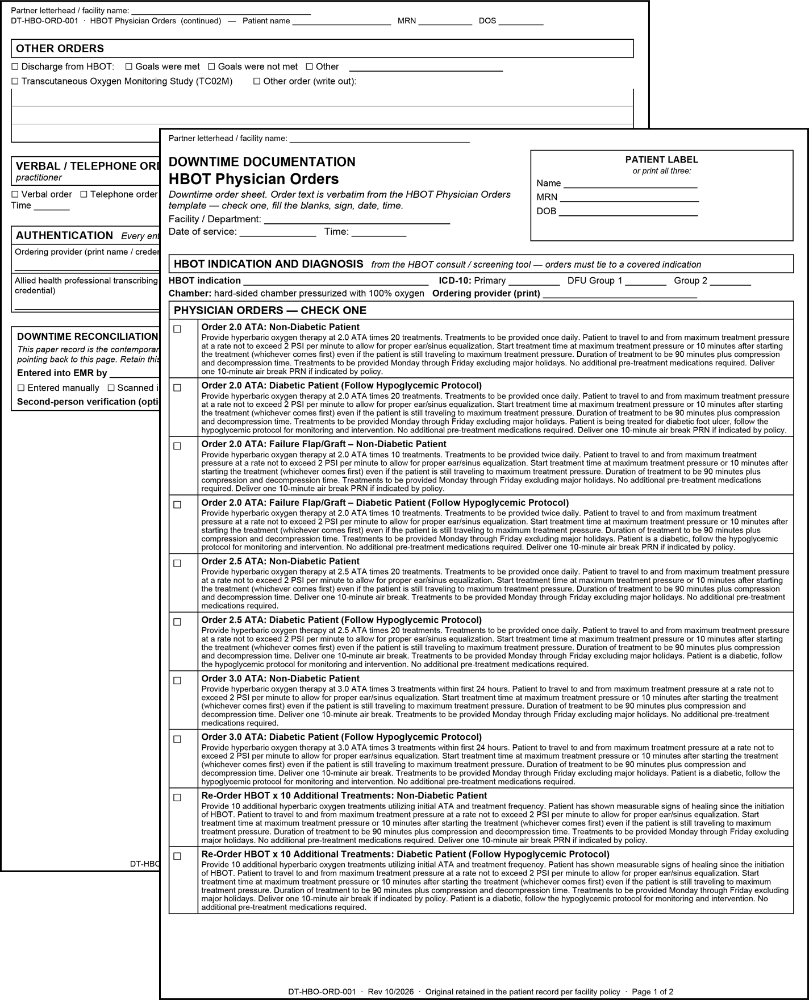
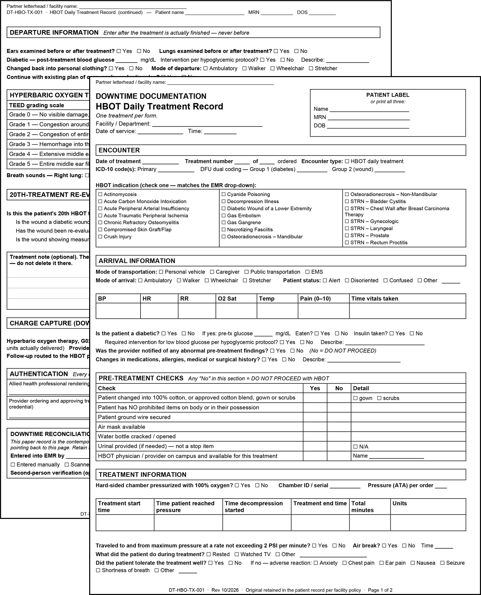

Matthew A. Davis, MBA
Operations & Corporate Development · Systems Design · Strategic Communications · Independent R&D
Tools · Shared Health Services
Downtime Documentation
The System
Hospital and physician practice partners own the downtime policy and declare it and notify staff when it happens, but a wound care or hyperbaric department still needs its own playbook: what to document on, how to capture charges while systems are unavailable and how to reconcile everything once the record returns. Lost charges are the most common downtime failure and often the hardest to reconstruct days later, so every encounter generates a charge ticket, and the reconciliation log stays open until every note, order and charge has been entered back into the EMR. The entire system is built around federal record-retention and emergency-preparedness requirements, and around the standard a hospital forms committee expects paper documentation to meet.



Wound Care
Each form mirrors its electronic counterpart field for field, from visit documentation to procedures, orders, plans of care and nursing visits. When the outage ends, staff can transcribe information back into the patient’s record rather than trying to reconstruct what happened from memory.




Hyperbaric
A hyperbaric chamber doesn’t depend on the EMR, and neither does a patient’s dive record. The downtime set preserves every pre-treatment safety check, physician order, treatment parameter and required timestamp, so a treatment can proceed safely while keeping a complete record of what occurred. The order sheet carries the physician-order language verbatim from the electronic template, reducing reconciliation to data entry once systems return.

